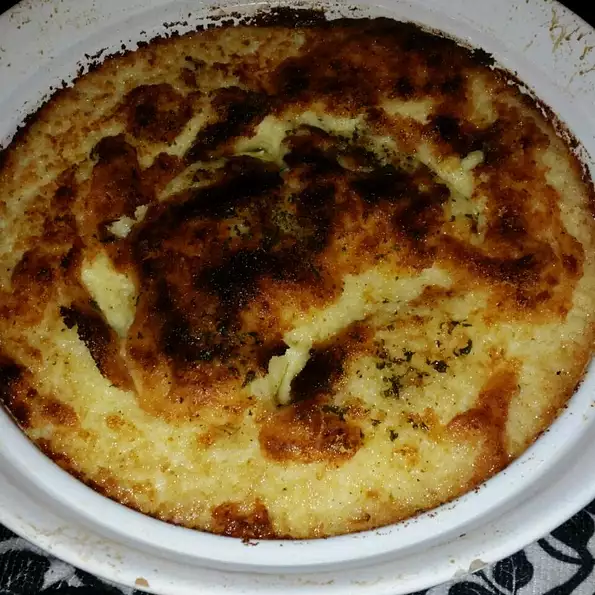

Party Potatoes

Description
These aren't your ordinary mashed potatoes! You can also make the mashed potatoes the day before, refrigerate overnight, then bake them the next day.
Ingredients
- 9 large potatoes
- 8 ounces cream cheese
- 1 cup sour cream
- 2 teaspoons onion salt
- 1 teaspoon salt
- ¼ teaspoon ground black pepper
- 2 tablespoons butter
Steps
- Preheat oven to 350 degrees F (175 degrees C). Grease a 2 quart casserole dish, and set aside.
- Bring a large pot of lightly salted water to a boil. Cook potatoes in boiling water until tender. Drain, and transfer to a large mixing bowl. Mash until smooth. Stir in cream cheese, sour cream, onion salt, salt, and pepper. Beat until light and fluffy. Transfer to the prepared casserole dish, and dot with pieces of butter.
- Bake for 30 minutes in the preheated oven, or until heated through.
Back to recipes